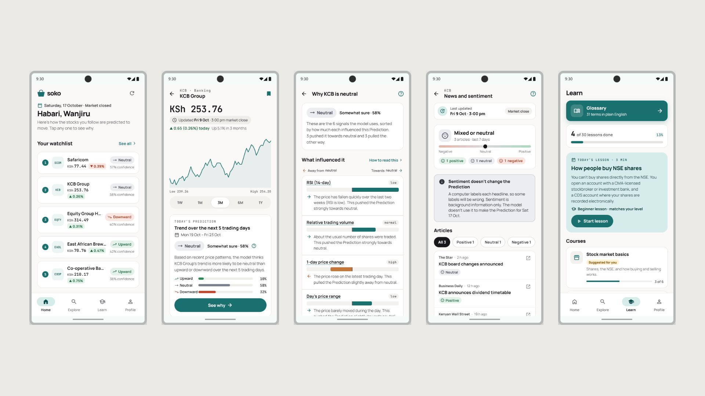

Soko
An Android app that explains AI stock predictions to first-time investors at the Nairobi Securities Exchange.

In a
nutshell
Soko predicts whether each of 55 NSE stocks will go up, stay flat or go down the next trading day, and explains why in plain language. It's built for people who are new to investing. It teaches, and it never tells anyone to buy or sell.
Why I
built it
I was new to investing too. When I started looking at the NSE, everything was either a hot tip with no reasoning or a dashboard full of charts I didn't understand yet.
Lots of young Kenyans are in the same spot: curious, ready to start, and not sure who to trust. So I built the app I wished I had, one that explains its thinking and teaches you along the way.
Built
to this
The song on repeat while I made it.
WHAT IT DOES
-
01
Next-day trend
Up, neutral or down for each stock, with the probability of each.
-
02
Why this prediction
The six technical signals the model uses, ranked by how much each one mattered and explained in plain words.
-
03
News context
FinBERT sentiment from recent articles, clearly labelled as context and not part of the prediction.
-
04
Learn as you go
Lessons, a glossary, streaks and a three-question check on whether you understood the explanation.
HOW IT WORKS
- Price + news data
- Batch prediction job
- MySQL
- Flask API
- Android app
Predictions and their SHAP explanations are worked out ahead of time and stored, so the API only reads rows and stays fast.
CALLS I MADE
-
01
Predict ahead of time
A batch job makes every prediction and stores it with its SHAP values, so the app never waits on the model.
-
02
No peeking at the future
A chronological 70/15/15 split, so the model never trains on days that come after the ones it’s tested on.
BUILT WITH
ML
- Python
- pandas
- XGBoost
- SHAP
- LIME
- FinBERT
BACKEND
- Flask
- SQLAlchemy
- MySQL
- pytest
MOBILE
- Kotlin
- Jetpack Compose
What I learned
- ✦ To check whether a feature actually helps before keeping it.
- ✦ How to write explanations for people with no finance background.
- ✦ How to take a project end to end, from raw data to a phone.
What's next
Live market data, more news coverage (only 153 articles so far), and testing the explanations with real users.
Prototype built on historical data. Not financial advice.